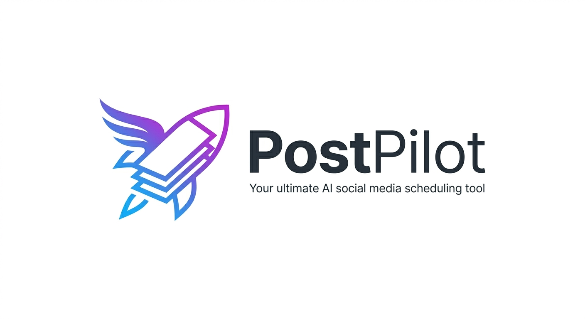
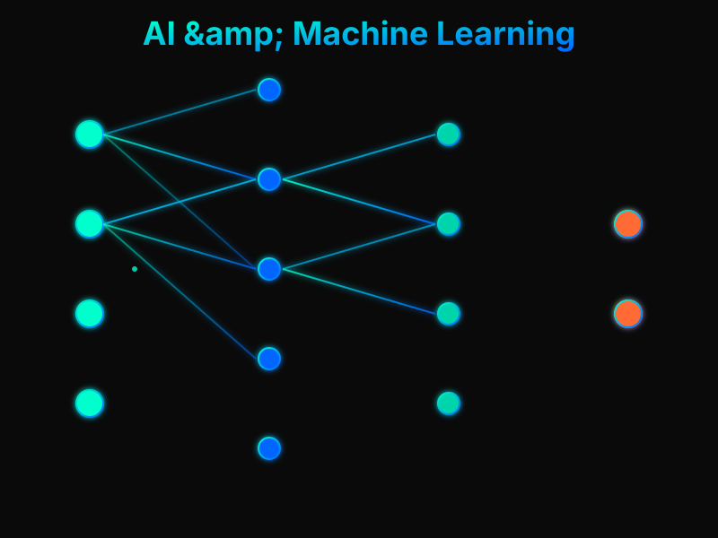
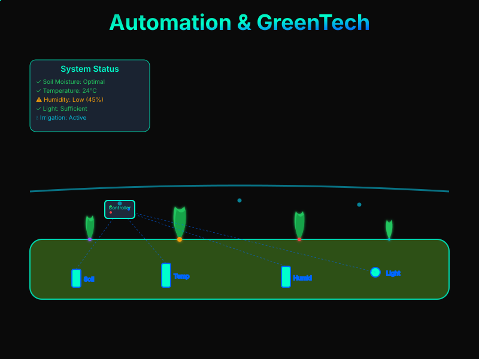
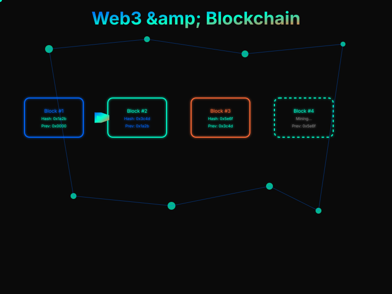
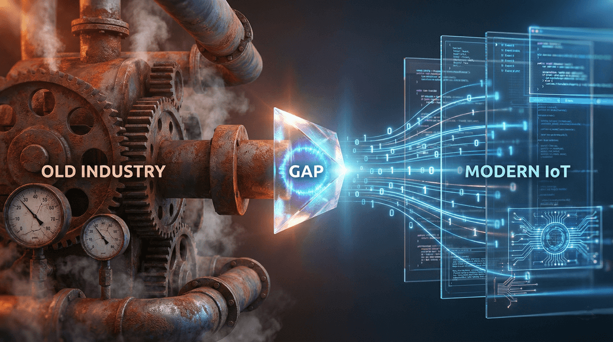
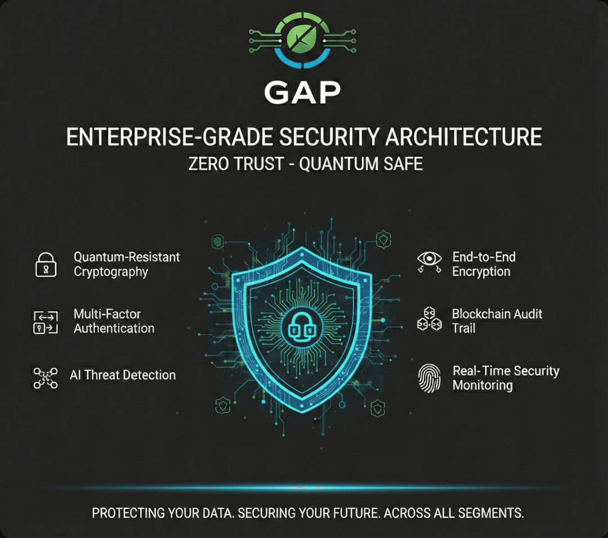

Platform Dashboard Previews



Deep Tech Developer & AI/Robotics Innovator
"I combine strategic vision with hands-on engineering at the hardware level. With a background as a Master Gardener and an expert in industrial forestry flows, I build cyber-physical systems that truly understand the biological environments they operate within. I can solder a circuit, train a neural network, and design the ecological context."
Automated Transparency for AI-Generated Code
As AI agents increasingly write our code, human reviewers lose the critical context behind the commits. I built the Agent-Commit Tracker to solve this blind spot. It is a production-grade, serverless microservice that intercepts GitHub webhooks in real-time, parsing hidden AI metadata to inject perfectly formatted context reports directly into Pull Requests.
X-Hub-Signature-256 headers to guarantee payload authenticity before any processing begins.As the Founder and CEO of Corax CoLAB, I drive intelligent automation in Deep Tech and AgTech. I am the architect behind the GAP (Green Automated Process) Platform and GAPbot, a Python-based hexapod robot. These platforms integrate IoT sensors, AI models like EcoMind, and autonomous navigation to conquer challenging terrains.
The industrial analysis and control center, developed to handle the most complex business logic and real-time data streams. A hybrid cloud/edge platform orchestrating fleets of robots.
Autonomous hexapod robotics for optimization, security, and analysis. Equipped with 'Sun Bathing Mode' for extreme endurance and superior accessibility in complex environments.
The "Full-Stack" of Matter: My technical environment bridges high-level code with physical execution.

Developing with Python and ROS on Linux environments to bring intelligent perception to edge devices.

Optimizing compute on Raspberry Pi 5 (16 GiB RAM), utilizing Hailo 8L AI accelerators (PCIe), and fast NVMe SSDs.

Operating headless environments via SSH/VNC, with heavy VScode and GitHub integrations powered by AI-driven development.
Interact with the holographic representation of a GAP-managed facility. Discover how our code translates to physical automation.
Watch our hybrid AI process raw Edge data, identify anomalies, and output logical, explainable decisions in real-time.
Showcasing specific coding projects, from serverless webhooks to Web3 data integrity and decentralized IoT networks.



With formal graduation as a Master Gardener and a decade of experience as a Quality Leader in industrial forestry, I bring a unique dual expertise. This ensures that my technological solutions are not just "smart," but ecologically sound and grounded in physical reality.
Deep dives into our neuro-symbolic AI models, hardware iterations, and Web3 infrastructure developments.
Experience our trustless architecture. Connect your wallet to sign a secure payload, demonstrating our decentralized approach and seamless interactions with blockchain tech.
Corax CoLAB merges cutting-edge AI and automation with Web3 infrastructure to ensure high-security, transparent, and auditable processes. Our integrations empower edge devices to securely authenticate, share data, and process commands leveraging decentralized smart contracts.
Real-time visualization of active edge nodes, validators, and data relays across the globe.
Ready to build the future with autonomous robotics, Edge AI, and sustainable ecosystems? Let's talk.
Visit our primary domain for deep dives into our services, enterprise solutions, and booking a demo.
coraxcolab.comReach out directly for consultation regarding AI, Web3, Blockchain, and advanced robotics integrations.
info@coraxcolab.com